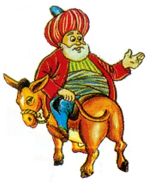

|

|
Akşehir’de büyük din adamı ve değerli zat "El-Mevla Hazret Şeyh Hoca Nasreddin"in kabri vardır. Kendisi Akşehirlidir. Gazi Hüdavendigar[4]’a yetişip, Yıldırım Han zamanında şöhret bulmuştur. Fazilet sahibi olup, hazırcevap, keramet sahibi, filozof, din ve dünya işlerini birlikte ve eksiksiz yürüten büyük bir zat idi. Timur’la bir toplantıda bulunmuştur. Timur Han, O’nun şerefli sohbetlerinden hoşlanırdı. Bu sebeple, o büyük bilginin hatırı için Akşehir’i yağma ettirmemiştir. Büyük hocanın sözleri ve latifeleri, bütün İslamlarda atasözü olarak söylenir.(...) Yıldırım Han’ın vefatından sonra, Çelebi Sultan Mehmed zamanında dünyadan göç etmiştir. Akşehir dışındaki kubbeli türbesine defnolunmuştur. Dört tarafı parmaklıkla çevrilidir. Allah rahmet eylesin.[5] |
| Yazıya geçirilmiş ilk Nasreddin Hoca hikâyesi 1480 tarihli Sarı Saltuk'un hayatını anlatan Ebu’l Hayr Rumi’nin Saltukname’sinde bulunmaktadır. "Saltukname", Fatih Sultan Mehmet'in oğlu Cem Sultan’ın şehzadeliği esnasında verdiği talimat üzerine Ebu’l hayr Rumi tarafından yedi senelik bir çalışma sonucunda Türk sözlü geleneğinden toplanarak 1480 yılında tamamlanmış ve kitaplaştırılmıştır. Tahsiline Abdullah Efendi'de başladığı ve tahsilinin sonunda babasının yerine köyünde imamlık yaptığı dönemde vefat ettiği şeklindeki rivayet göz önüne alınırsa, onun, Selçuklular devrinde yaşadığını ve Timur Han ile görüşemediğini dikkate almak gerekir. Nasreddin Hoca, insanlara doğru yolu gösteren, iyilikleri bildiren, doğruluğa sevk eden ve kötülüklerden sakındıran bir veli idi. Bu işi yaparken tabiatı icabı kendisine has bir yol tutmuştur. Böylece Hak’kın anlatılması ve cemiyetteki bozuk yönlerin düzeltilmesi için, meseleyi halkın anlayacağı bir dil ve üslupla ilgi çekici manidar latifeler halinde kısa ve öz olarak dile getirmiştir. Özhan Öztürk Nasreddin Hoca'nın Moğol işgali altında kıvranan Anadolu halkının çaresiz yazgısının sembolü olduğunu, yazılı basının olmadığı bir dönemde yöneticiler ve kamu düzeninin eleştirisinin Hoca’nın ağzından dile getirildiğini yazar [6] Pertev Naili Boratav [kaynak belirtilmeli] Bu latifelerin toplandığı eserlerden biri, Londra’da |